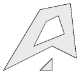
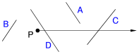
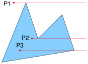
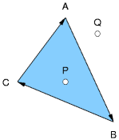
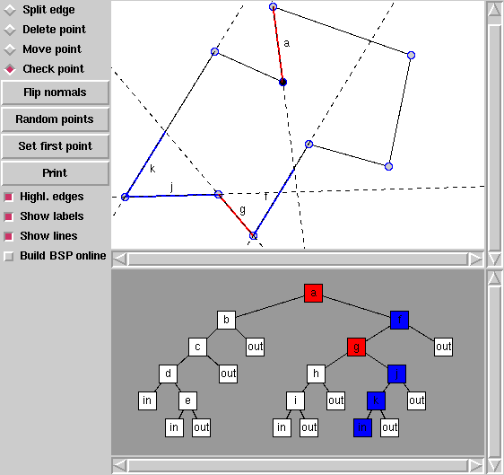

| Autor: | Wojciech Muła |
|---|---|
| Dodany: | 26.10.2002 |
| Aktualizacja: | 21.02.2007 |
Contents
Załóżmy, że sprawdzany jest punkt P. Przeprowadzamy, w dowolnym kierunku, półprostą zaczepioną w tym punkcie i liczymy ilość przecięć z krawędziami wielokąta. Jeśli wynikiem jest liczba nieparzysta to punkt P jest wewnątrz wielokąta.
Proszę pamiętać, że istotnym jest stwierdzenie faktu przecięcia, nie jego współrzędne!
Niewątpliwą zaletą tej metody jest możliwość określenia przynależności punktu nie tylko do wielokąta, ale figury ograniczonej łamaną wiązana zamknięta (czyli samoprzecinająca się), krzywymi sklejanymi lub nawet zbioru tych obiektów. Mówiąc zbiór mam na myśli grupę np. kilku wielokątów — na rysunku przedstawiono przykład.
Proszę zwrócić uwagę, że w ten sposób łatwo dokonywać operacji logicznych — umieszczenie jakiegoś wielokąta wewnątrz innego powoduje wycięcie „dziury”, z kolei umieszczenie obok — dodanie „wiszącego” kawałka.
Teoretycznie półprostą można przeprowadzić w dowolnym kierunku, jednak ze względu na uciążliwe testowanie przecięć w ogólnych warunkach warto uprościć nieco zadanie. Najlepiej gdy półprosta jest pozioma lub pionowa, wtedy problem praktycznie upraszcza się do jednego wymiaru.
Odcinki A oraz B są odrzucane od razu jako nieprzecinające półprostej, podobnie odcinek C jest natychmiast klasyfikowany jako przecinający półprostą. Dopiero odcinek D wymaga bardziej zaawansowanych testów.
Poniższy kod powinien rozwiać wszelkie wątpliwości.
# (x,y) - współrzędna punktu P
# (x0,y0), (x1,y1) - początek i koniec odcinka
def edge_cross_halfline(x,y, x0,y0, x1,y1):
# odcinek poziomy
if y1==y0:
return 0
# odcinek A
if y0 > y xor y1 > 0: # (y0>y and y1>y) or (y0<y and y1<y)
return 0
# odcinek B
if x0 < x and x1 < x:
return 0
# odcinek C
if x0 >= x and x1 >= x:
return 1
# odcinek D
# 1. liczymy punkt przecięcia (xp, yp)
t = (y-y0)/float(y1-y0)
xp = x0 + t*(x1-x0) # yp=y
# 2. klasyfikujemy
if xp >= x:
return 1
else:
return 0
Testując przynależność punktu do wielokąta operacje dokonywane są na poziomie krawędzi (odcinków). Gdy półprosta przechodzi przez wierzchołek, to policzone zostaną dwa przecięcia, bowiem punkt ten należy do dwóch krawędzi z niego wychodzących.
Uwaga: zakłada się, że punkt nie należy do brzegu wielokąta!
Tak więc punkty P1 (2 mod 2 = 0) i 2 (3 mod 2 = 1) zostaną prawidłowo sklasyfikowane, okaże się natomiast, że punkt P3 (2 mod 2 = 0) leży poza wielokątem.
Rozwiązaniem tego problemu jest przejęcie, że punkt należy tylko do jednej z krawędzi; przy czym krawędź do której nie należy znajduje się powyżej półprostej.
I tak dla punktu P1 zostaną policzone dwa przecięcia, dla punktu P2 oraz P3 zliczone zostanie jedno przecięcie.
Poniżej wymagane zmiany w funkcji edge_cross_halfline.
# sortowanie: y0 < y1
if y0 > y1:
x0,y0, x1,y1 = x1,y1, x0,y0
# odcinek A
if y0 < y and y1 <= y: # odcinek powyżej
return 0
if y0 > y and y1 > y: # odcinek poniżej półprostej
return 0
# ...
Funkcja przejmuje wielokąt opisany listą krawędzi i wierzchołków. Każda krawędź to 2-elementowa krotka zawierająca indeksy do tablicy wierzchołków. Każdy wierzchołek to również krotka dwuelementowa która zawiera współrzędne punktu.
def point_in_polygon(x,y, edges_list, vertex_list):
count = 0
for e in edges_list:
a,b = e
x0, y0 = vertex_list[a]
x1, y1 = vertex_list[b]
count += edge_cross_halfline(x,y, x0,y0, x1,y1)
return count%2 == 1
Wielokąt wypukły o n bokach można traktować jako koniunkcję n półpłaszczyzn; granice tych półpłaszczyzn wyznaczają proste na których leżą krawędzie wielokąta.
Przy założeniu, że wektory kierunkowe tych prostych są ułożone zgodnie (bądź przeciwnie) z kierunkiem wskazówek zegara, punkt znajdujący się we wnętrzu wielokąta będzie położony zawsze po tej samej stronie prostych — wystarczy więc sprawdzić ten fakt,
Położenie punktu względem prostej określa znak funkcji f(x, y) = ax + by + c, gdzie [a, b] to wektor normalny do prostej. Jeśli krawędź wielokąta jest dana parą punktów A = (xi, yi), B = (xj, yj), to a = yj − yi, oraz b = − (xj − xi).
Poniżej funkcja, która realizuje opisaną procedurę:
def point_in_convex_polygon(points, (x, y)): """ Returns true if point (x,y) lie inside of convex polygon given with points """ side = None n = len(points) for i in xrange(n): xi, yi = points[i] xj, yj = points[(i+1) % n] d = (x - xi)*(yj - yi) - (y - yi)*(xj - xi) if d == 0.0: continue else: if side is None: side = d > 0.0 # point have to lie at the same side # of all lines elif (d > 0.0) != side: return False return True
Trójkąt jest oczywiście figurą wypukłą, dlatego można z powodzeniem zastosować przedstawioną wyżej funkcję. Można również wprost odwołać się do tych ledwie trzech prostych AB, BC, CA:
def point_in_triangle(x,y, xa,ya, xb,yb, xc,yc): def side(x,y, x0,y0, x1,y1): dx = x1-x0 # przesunięcie odcinka dy = y1-y0 # o wektor (-x0,-y0) x = x-x0 y = y-y0 # f(x,y) = ax+by = dy*x - dx*y return dy*x - dx*y > 0 sideAB = side(x,y, xa,ya, xb,yb) sideBC = side(x,y, xb,yb, xc,yc) sideCA = side(x,y, xc,yc, xa,ya) return (sideAB == sideBC) and (sideAB == sideCA) and (sideBC == sideCA) # albo: # not ((sideAB xor sideBC) or (sideAB xor sideCA))
W przypadku używania zmiennych całkowitych w funkcji side rozsądnym zdaje się użycie MMX-owego rozkazu pmaddwd.
Trzy niewspółliniowe punkty P0, P1 i P2 (wierzchołki trójkąta) mogą tworzyć bazę przestrzeni; każdemu z tych punktów przyporządkowana jest pewna waga — my przyjmiemy, że wszystkie wagi są równe 1.
Dowolny punkt P można wyrazić jako sumę ważoną
P = t0P0 + t1P1 + t2P2
Współczynniki t0, t1 i t2 są nazywane współrzędnymi barycentrycznymi; mają wartości z przedziału [0, 1], a ich suma jest równa 1.
Po podstawieniu t2 = 1 − t0 − t1 wyrażenie upraszcza się do postaci:
P − P2 = t0(P0 − P2) + t1(P1 − P2)
Wystarczy więc rozwiązać układ dwóch równań i sprawdzić czy suma rozwiązań t0 i t1 jest mniejsza od 1, oraz czy t0, t1 są nie mniejsze od zera .
def point_in_triangle(x,y, x0,y0, x1,y1, x2,y2): x -= x2 # przesunięcie wszystkich punktów x0 -= x2 # o wektor (-x2,-y2) x1 -= x2 y -= y2 y0 -= y2 y1 -= y2 # rozwiązanie układu równań # x = t0 x0 + t1 x1 # y = t0 y0 + t1 y1 # wyznacznik główny det = x0*y1 - y0*x1 # ewentualnie, jeśli współrzędne mogą być podane # jako całkowite: det = float(x0*y1 - y0*x1) if abs(det) < epsilon: # brak rozwiązań return False t0 = ( x*y1 - y*x1)/det t1 = (x0*y - y0*x )/det if t0 < 0 or t1 < 0 or t0+t1 > 1: return False else: return True
Aby zbadać czy punkt 3D leżący na tej samej płaszczyźnie co trójkąt znajduje się jego wnętrzu należy zrzutować punkt i trójkąt na płaszczyznę XY, ZX lub YZ. Wybierana jest ta, na której trójkąt ma największe pole (by zminimalizować błędy); należy więc „pozbyć” się jeden współrzędnej.
Jeśli zdefiniuje się prostopadłościan otaczający, który jest równoległy do wyżej wymienionych płaszczyzn, to ów wybór jest prosty — pomijana jest ta współrzędna dla której prostopadłościan ma najmniejszą wysokość.
# punkty to trzyelementowe krotki (x,y,z) def point_in_triangle3D(p, p0,p1,p2) x,y,z = p x0,y0,z0 = p0 x1,y1,z1 = p1 x2,y2,z2 = p2 dx = max(x0,x1,x2) - min(x0,x1,x2) # wysokości dy = max(y0,y1,y2) - min(y0,y1,y2) # prostopadłościanu dz = max(z0,z1,z2) - min(z0,z1,z2) min_height = min(dx,dy,dz) if dx == min_height: # płaszczyzna YZ: pomijamy wsp. x return point_in_triangle(y,z, y0,z0, y1,z1, y2,z2) if dy == min_height: # płaszczyzna ZX: pomijamy wsp. y return point_in_triangle(z,x, x0,z0, x1,z1, x2,z2) if dz == min_height: # płaszczyzna XY: pomijamy wsp. z return point_in_triangle(x,y, x0,y0, x1,y1, x2,y2)
Przedstawiona tutaj metoda to oczywiście nie jedyna, choć powszechnie znana. Przegląd metod oraz kody źródłowe można znaleźć w artykule Erica Hainesa Point in Polygon Strategies: http://www.acm.org/pubs/tog/editors/erich/ptinpoly/.
Nie wspomniano tam jeszcze o drzewach BSP, za pomocą których można wielokąty opisywać i szybko (mniej więcej w czasie logarytmicznym) stwierdzać przynależność punktu do wielokąta. Proces tworzenia drzew BSP nie jest zbyt szybki, toteż jest sens je stosować, gdy testuje się przynależność wielu punktów względem jednego wielokąta.
Przykładowy program używający drzew BSP do określania przynależności punktów do dowolnego wielokąta:
(Wielokąty można rysować myszką, można również podać w linii poleceń listę współrzędnych).
Opis drzew BSP, w tym algorytm budowania takiej struktury, znajduje się na Wikipedii — patrz hasło Drzewo BSP. W przykładowym programie funkcja tworząca drzewo nosi nazwę build_BSP.
Algorytm stwierdzający przynależność punktu do wielokąta jest bardzo prosty -- funkcja BSP_classify_point:
def BSP_classify_point(root, P): assert root is not None node = root while node: inside = node.leaf if inside is not None: break if node.side(P) >= 0.0: node = node.left else: node = node.right return inside
Bada się, począwszy od korzenia, po której stronie linii na której leży odcinek zapisany w węźle znajduje się testowany punkt i w zależności od tego sprawdza lewe, bądź prawe poddrzewo. Istotna jest tutaj konsekwencja, by np. dodatnia strona linii była „wewnątrz”. Procedura kończy się wraz z dojściem do pustego wskazania, albo jak w przykładowym programie liścia o etykiecie in lub out.
